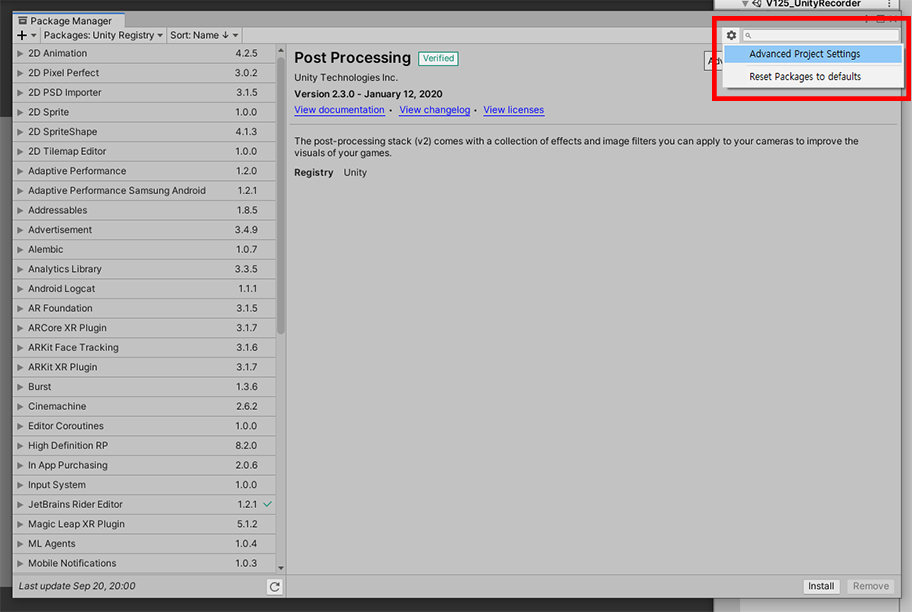
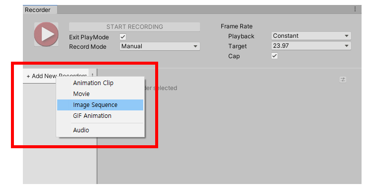
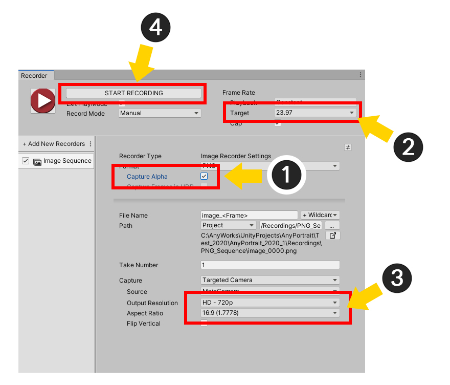
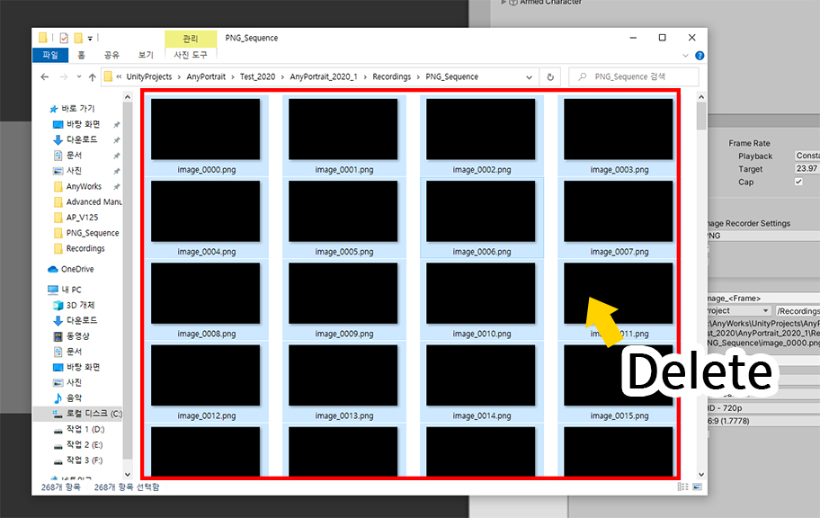
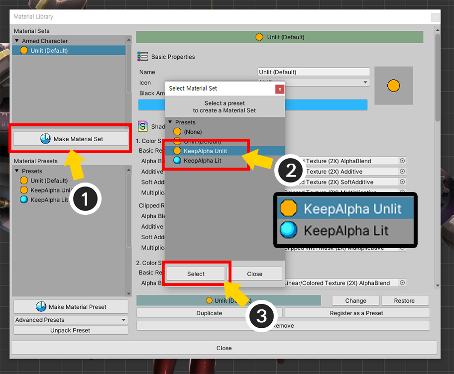
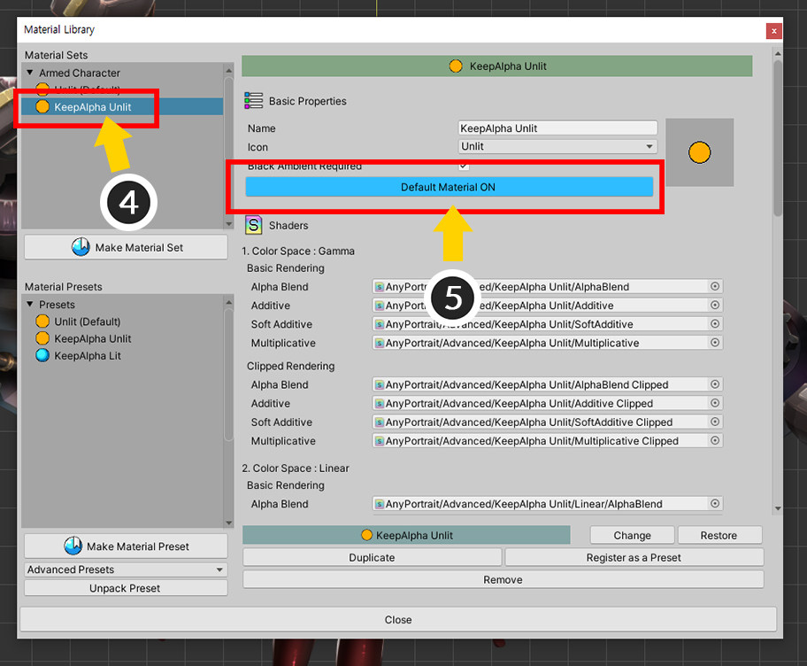
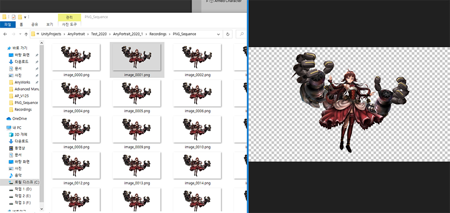

AnyPortrait > マニュアル > 「Unity Recorder」を使用
「Unity Recorder」を使用
1.2.5
Unityで提供するパッケージの中に「Unity Recorder」という面白いパッケージがあります。
これはUnityエディタのゲーム中の画面を記録し、画像や動画で保存する機能を提供するパッケージです。
まだ「Preview」の段階のパッケージが、意外に多くのユーザーの方々AnyPortraitとの互換性を問い合わせました。
このページでは、AnyPortraitで制作したキャラクターを「Unity Recorder」で撮影する方法を説明します。
下のページを一緒に確認してみもお勧めです。
- Unity Recorder 2.2公式ページ（英語）
- 画面キャプチャ
案内 : 「Unity Recorder」はまだ「Preview」段階なので、バージョンによっては、このページの説明とは多少異なる場合があります。
このページの説明は、「Unity 2020.1」と「Unity Recorder 2.2」に基づいています。
「Unity Recorderパッケージ」をインストールして動画を撮影する

Unityエディタの「Window＆RC Package Manager」を選択します。

「Package Manager」が開かれたがリストに「Unity Recorder」が見えないことです。
「設定ボタン」を押した後、「Advanced Project Settings」をクリックします。

(1) 「Enable Preview Packages」チェックボックスがオフになっていることです。このオプションを「有効」です。
(2) 案内メッセージが表示されます。 「OK」ボタンを押します。

再び「Package Manager」を開きます。
今リストに「Unity Recorder」が表示されます。
(1) 「Unity Recorder」を選択します。
(2) 「Installボタン」をクリックします。

「Package Manager」を閉じ、Window＆RC General＆RC Recorder＆RC Recorder Windowを選択します。

「Recorder UI」が表示されます。
(1) 「+ Add New New Recordersボタン」をクリックします。
(2) 「Movie」を選択してみましょう。

動画撮影のための設定画面が表示されます。
1. 動画のフレームレートを設定することができます。
2. 動画フォーマットをMP4やWEBMの中から選択することができます。
3. ファイルを保存する場所と名前を指定することができます。
4. の画面がどのように記録されるかを設定することができます。
5. 動画の品質を選択することができます。

動画撮影の設定をした後、録画を始めてみましょう。
UnityシーンにAnyPortraitで製作されたキャラクターが配置されており、ゲームが開始されると、アニメーションが自動的に開始されるように設定された状態です。
(アニメーションを自動的に実行するようにする方法)
(1) 「Start Recording」ボタンを押します。

(1) ゲームが自動的に実行され、キャラクタアニメーションが再生されます。
(2) 動画撮影が終わったと判断されると、「Stop Recording」ボタンを押します。

(1) 動画ファイルが保存されるフォルダを開いてみましょう。
(2) 動画が保存されたことを見ることができます。

動画撮影をするときは、同じ名前で保存されるように設定すると、続けて、そのファイルが上書きされることがあります。
これを防ぐためには、上記のようにファイル名に日付、時刻、撮影番号などを追加することができます。
透明な背景の画像として保存する
背景を透明にして画像として保存しようとする必要があるとき、AnyPortraitで製作されたキャラクターがレンダリングがされていない問題があります。
この問題は、「レンダリングテクスチャ（Render Texture）」での問題と同じです。
透明な背景を設定してレンダリングするときの問題を解決する方法は、以下の説明または「関連ページ」を参照してください。

透明な背景にレンダリングするようにカメラの設定を変更します。
「Clear Flags」を「Solid Color」に設定し、「BackgroundカラーのAlpha」を「0」に設定します。

「+ Add New Recorders」ボタンをクリックし、「Image Sequence」を選択します。

画像シーケンスファイルにエクスポートをすれば、多数の画像ファイルが生成されるので、別のフォルダに保存することをお勧めします。
(1) 保存されているパスを変更するボタンを押して (2) 空の新しいフォルダを選択してください。

(1) ファイルフォーマットを「PNG」に設定します。
(2) 「Capture」オプションをGame Viewではなく、「Targeted Camera」に変更し、選択されたカメラが先に 「透明な背景色で描画するように設定された」カメラであることを確認します。

(1) 「Capture Alpha」オプションをチェックします。
(2) 「フレームレート」を設定します。あまりにも多くの画像ファイルが生成されないように適切なフレームレートを設定することをお勧め。
(3) 「画面サイズとの比率」を設定します。
(4) 「Start Recordingボタン」を押して録画を始めてみましょう。

録画を終えてフォルダを開いてみると、キャラクターが見えず、透明な画像のみ生成されたことを見ることができます。
この問題は、「レンダリングテクスチャ」も同様です。 「KeepAlpha材質」を利用して、この問題を解決することができます。

再び録画するに先んじて、間違って録画されたファイルをすべて削除します。

(1) AnyPortraitエディタを開いて、キャラクターを選択した後、「Material Library」ボタンを押します。
(2) 「KeepAlpha Presetsパッケージ」を選択します。

(1) 「Unpack Presetボタン」を押して「KeepAlpha Presets」パッケージをインストールします。
(2) インストール時に「マテリアルライブラリ」が閉まるというメッセージが表示されます。 「OKボタン」を押します。

再びマテリアルライブラリを開きます。
(1) 「Make Material Setボタン」を押します。
(2) インストールされて「KeepAlpha」プリセットが表示されます。イメージソースの色を記録する場合、「KeepAlpha Unlit」、光の影響を受けた場合、「KeepAlpha Lit」プリセットを選択します。
(3) 「Selectボタン」を押します。

(4) 新しい「KeepAlphaセット」が追加されたことを見ることができます。生成された「KeepAlphaセット」を選択します。
(5) 「Default Materialボタン」を押して基材に設定します。

Bakeを実行します。

(1) Unityシーンに戻ると、変更されたマテリアルが適用されたキャラクターを見ることができます。 （KeepAlphaは概ね基本マテリアルとほぼ同じ結果を示し、特にKeepAlpha Unlitを選択した場合とほぼ同じように見えることです。）
(2) 「Start Recordingボタン」を押して録画を開始します。

録画を終了して保存された画像ファイルを開いてみましょう。
キャラクターが透明な背景でレンダリングされました。